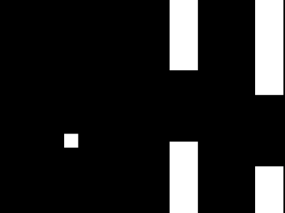

最初に少し考えてみる
ここでは、実際のコーディングに入る前に、少しだけ抽象的なことを考えてみます。
具体的なソースコードがないとイメージしにくいという人は、
いったん話半分に聞いていただいても問題ありません。
何を考えるべきか
突き詰めて考えると、
- あらゆるゲームの キャラ／障害物／アイテム etc. は、すべてデータの集まり
- ゲーム画面に動きがあるということは、データが変化しているということ
よって、作ろうとしているゲームについて次のことがわかれば、
プログラムの構成要素が分かったことになる
- データの種類には、どういったものがあるか？
- それらのデータを使う処理には、どういったものがあるか？
データの種類を考える
この世界に存在するものは何か？

今回、次のように呼ぶことにする
- プレイヤー： 遊ぶ人が操作する対象
- ブロック： 迫ってくる障害物
- エンティティ： プレイヤー と ブロック の総称
以上が今回の主役。
まずはこれらに関係するデータについて考え、その他についてはコードを書きながらおいおい考えていくことにする
一つ一つのエンティティに固有のデータは何か？
どのエンティティも、画面上のどこかに位置していて、かつ移動している
→ つまり、次のデータを持っているはず
- 位置 (x, y)
- 速度 (x, y)
なお、簡単のため、
- ブロックの「大きさ」はみんな一緒（画面からはみ出しているだけ）
- 「色」や「形」も（今のところ）みんな一緒
と考えておく。これらのデータはエンティティごとに管理しなくてもよいことになる

データの処理を考える
エンティティの持つデータが「位置」と「速度」だとして、これらはどんなふうに処理されるのか？
プレイヤーとブロックでその処理はどう違うか？
列挙してみる
- みんな移動しているので、位置の更新が必要
- プレイヤーもブロックも、更新の仕方は変わらない（位置に加算するだけ）
- 初期値がないと始まらない。データの作成処理が必要
- プレイヤーとブロックで異なる。
初期値が違うし、ブロックの出現位置にはランダム要素もある
- プレイヤーとブロックで異なる。
- それぞれの位置に描画する必要がある
- プレイヤーとブロックは見た目が違うので、描画の方法も異なる
- プレイヤーのみ、重力で落下したりジャンプしたりする
- ブロックには無関係
整理すると……
全エンティティ共通
- 位置の更新
プレイヤー用
- 作成
- 重力の適用
- ジャンプ
- 描画
ブロック用
- 作成
- 描画